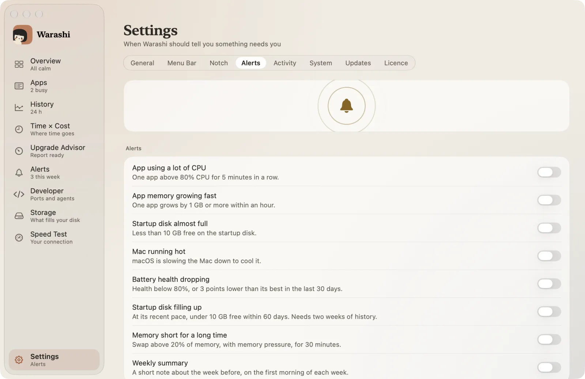
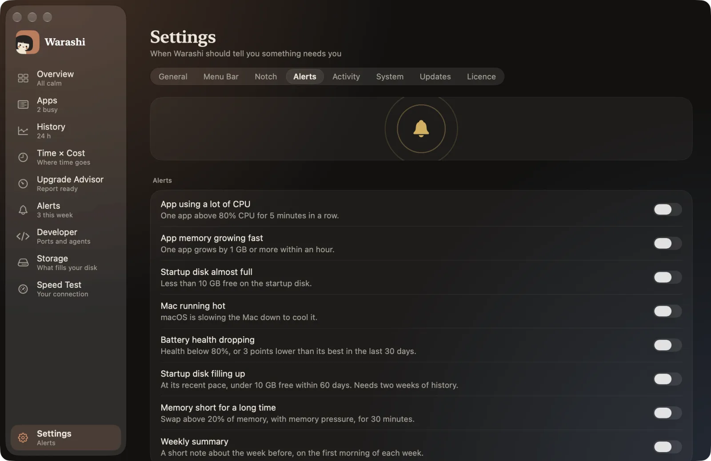
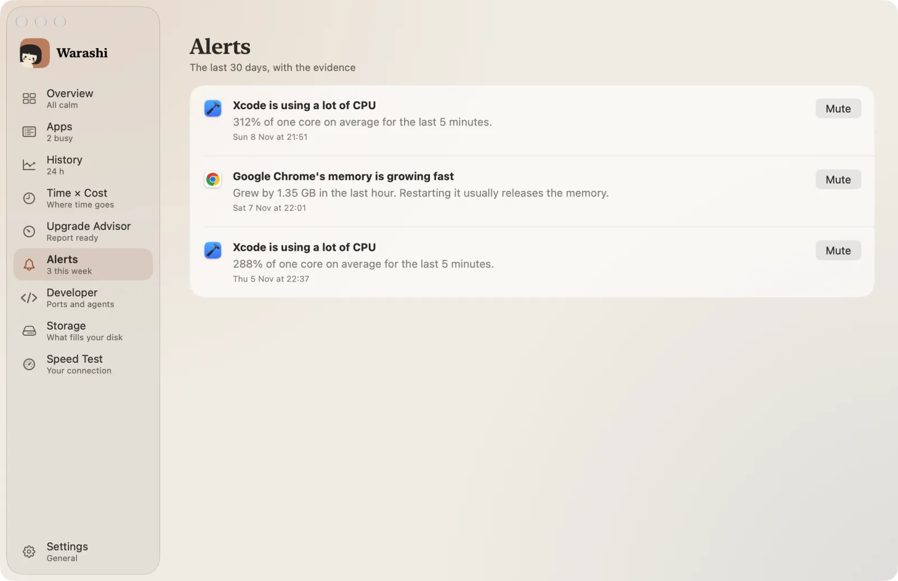
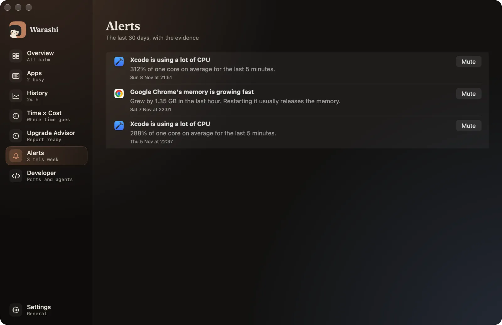

Les alertes vous préviennent quand quelque chose demande votre attention : une fois par problème, pas à chaque minute où il persiste.
- Ouvrir Réglages › Alertes
Appuyez sur ⌘, et choisissez l’onglet Alertes.


- Activer les alertes souhaitées
Chaque interrupteur correspond à une règle (voir le tableau ci-dessous). Ils sont tous désactivés tant que vous ne les activez pas.
- Autoriser les notifications
La première fois, macOS demande si Warashi peut envoyer des notifications. Cliquez sur Autoriser. Si vous avez refusé, les alertes apparaissent quand même dans la liste Alertes de Warashi et dans l’encoche ; vous pourrez les autoriser plus tard dans Réglages Système › Notifications › Warashi.
- Lire et ignorer les alertes
Choisissez Alertes dans la barre latérale (⌘6) pour voir les 30 derniers jours, données à l’appui. Cliquez sur Ignorer pour arrêter une alerte pour cette app en particulier.


Les alertes
| Alerte | Quand |
|---|---|
| App utilisant beaucoup de CPU | Une app au-dessus de 80 % de CPU pendant 5 minutes d’affilée. |
| La mémoire d’une app augmente vite | Une app augmente de 1 Go ou plus en une heure. |
| Disque de démarrage presque plein | Moins de 10 Go libres sur le disque de démarrage. |
| Le Mac chauffe | macOS ralentit le Mac pour le refroidir. |
| État de la batterie en baisse | État inférieur à 80 %, ou 3 points sous son maximum des 30 derniers jours. |
| Le disque de démarrage se remplit | Au rythme récent, moins de 10 Go libres d’ici 60 jours. Nécessite deux semaines d’historique, et prévient au plus toutes les deux semaines. |
| Mémoire insuffisante depuis longtemps | Swap supérieur à 20 % de la mémoire, avec pression mémoire, pendant 30 minutes. Au plus toutes les 6 heures. |
Si quelque chose ne va pas
- Pas de notifications : vérifiez Réglages Système › Notifications › Warashi. Warashi affiche une note dans Réglages › Alertes lorsqu’elles sont désactivées.
Plus d’infos dans Dépannage, ou écrivez à adam@warashi.app.